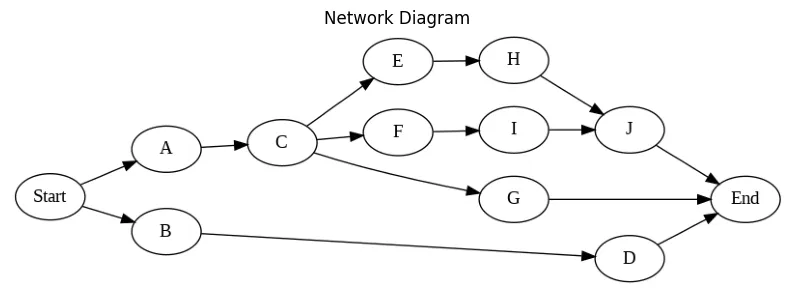
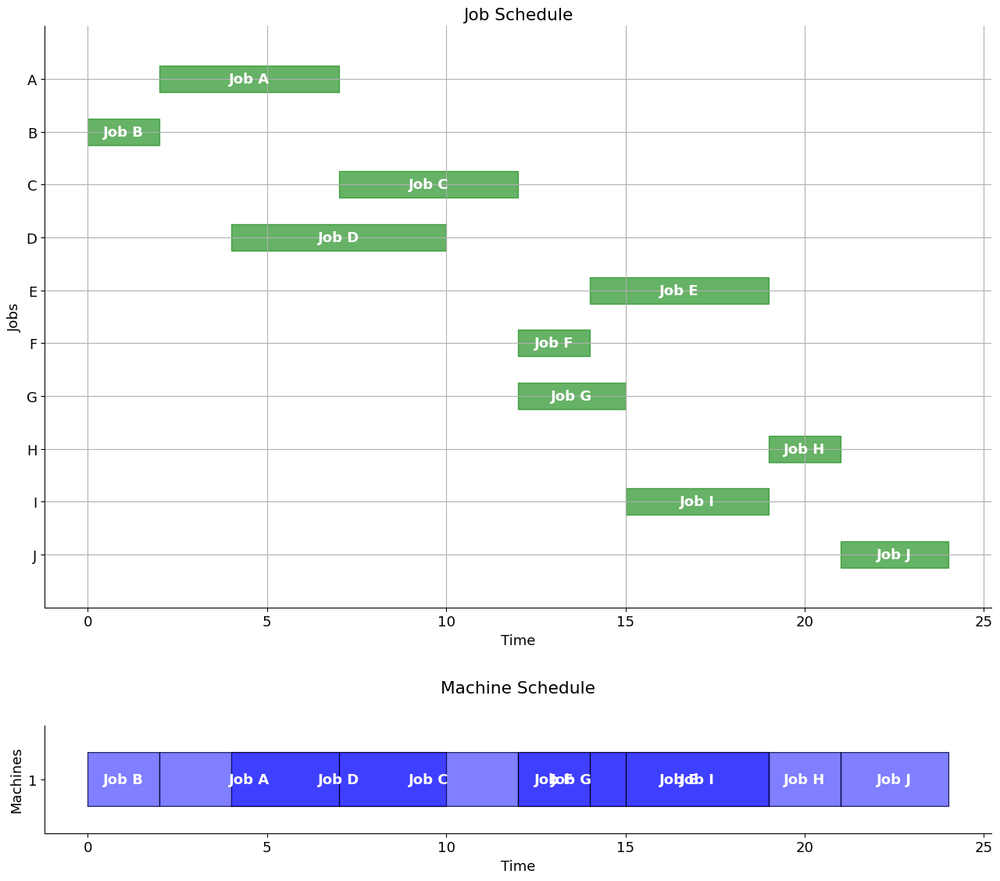
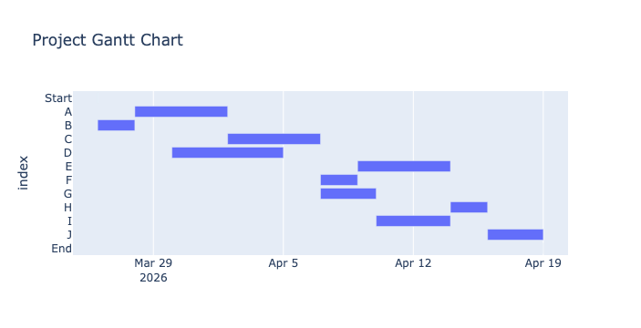

import pandas as pd #handling dataframes
import numpy as np #numpy for array management
import matplotlib.pyplot as plt #plotting
import plotly.express as px #generate interactive plots
from datetime import timedelta, date, datetime # datetimes processing
from itertools import chain, combinations, permutations, product
#pyomo.environ provides the framework for building the model
import pyomo.environ as pyo
#SolverFactory allows to call the solver
from pyomo.opt import SolverFactory
#store the solver in a variable to call it later, we need to tell google colab
#the specific path on which the solver was installed
opt_glpk = pyo.SolverFactory('glpk') #, executable='/opt/homebrew/bin/glpsol')Ex. D3: RCPSP Examples
We study a Resource Constrained Project Scheduling Problem (RCPSP).
Release Notes
- 20260325: this is a simple, explicit RCPSP version, based on post
RCPSP
Recall the setting.
The main objective for the RCPSP is to find the optimal feasible schedule, that produces the minimum project duration (or any function of the duration, such as cost) while respecting all of the precedence and resource constraints.
The RCPSP has the following input data: \(\mathcal{J}\) set of jobs, \(\mathcal{R}\) set of renewable resources, \(\mathcal{S}\) set of precedences between jobs \((i,j)\in\mathcal{J}\times\mathcal{J},\) \(\mathcal{T}\) planning horizon set of possible processing times for jobs, \(p_{j}\) processing time of job \(j,\) \(u_{(j,r)}\) amount of resource \(r\) required for processing job \(j,\) \(c_{r}\) capacity of renewable resource \(r.\)
There are many different Mixed Integer Linear Programming (MILP) formulations for the RCPSP (at least 12). We choose the most suitable, discrete-time (DT) formulation. This is a binary formulation where we have:
- one binary variable \(x_{i,t}\) for each activity \(i\) and starting time/date \(t.\)
- \(x_{i,t} = \begin{cases} 1, \quad \text{if activity i starts on day/time t,} \\ 0, \quad \text{otherwise.} \end{cases}\)
- The total number of variables is equal to the number of project activities (plus two extra dummy activities – one for the project ‘Start’ and one for the project ‘End’) multiplied by the number of possible start dates \(t.\)
- The number of possible start dates is determined by the project time horizon \(T,\) which represents the maximum possible project duration.
- Each task has a duration \(p_i\) and a resource consumption \(u_{i,k}\) for each resource \(k.\)
- Precedence constraints are provided as a list of tuples \(E\) in the form \((i,j),\) indicating that task \(j\) cannot start until task \(i\) is finished.
The optimization problem is then,
\[ \begin{align} \text{Minimize} \quad & \sum_{t\in \mathcal{T}} t\cdot x_{(n+1,t)} & (1)\\ \text{Subject to:} \quad & \sum_{t\in \mathcal{T}} x_{(j,t)} = 1 \,\,\, \forall j\in J & (2)\\ & \sum_{j\in J} \sum_{t_2=t-p_{j}+1}^{t} u_{(j,r)}x_{(j,t_2)} \leq c_{r} \,\,\, \forall t\in \mathcal{T}, r \in R & (3) \\ & \sum_{t\in \mathcal{T}} t\cdot x_{(s,t)} - \sum_{t \in \mathcal{T}} t\cdot x_{(j,t)} \geq p_{j} \,\,\, \forall (j,s) \in S & (4)\\ & x_{(j,t)} \in \{0,1\} \,\,\, \forall j\in J, t \in \mathcal{T} & (5) \end{align}\]
- The objective function (1) represents the sum of all possible start dates for the dummy variable \(x_{n+1,t}\) (where these dummy variables represent the project’s end date). We know that only one of these variables will equal 1 for a specific \(t.\) Therefore, by minimizing the sum of the product \(t*x_{n+1,t},\) we are effectively minimizing the project duration.
- Constraint (2) ensures that each activity \(i\) has exactly one start date.
- Constraint (3) guarantees that for any time period \(t,\) the schedule does not exceed the capacity \(c_r\) for any resource \(r.\)
- Finally, constraint (4) ensures that if an activity \(j\) follows another activity \(i,\) then activity \(j\) must start after the finish date/time of activity \(i,\) which is equal to the start date/time of \(i\) plus its duration \(p_i.\)
Naive implementation
We consider a workflow with
- 10 tasks,
- durations,
- precedence relations from the DAG,
- 3 resources [r1, r2, r3], for example [cpu, gpu, mem].

Tabular data: job, duration, resource requirements, precedences.
| Job | Duration | Resource | Precedence | |
|---|---|---|---|---|
| A | 5 | [1,0,0] | - | |
| B | 2 | [1,0,0] | - | |
| C | 5 | [0,1,0] | A | |
| D | 6 | [0,0,1] | B | |
| … | … | … | … |
Input Data
We use a very simple input format, for illustrative purposes. Thsi will be improved below, to draw the GANTT chart.
activities = {0:'Start',
1: 'A',
2: 'B',
3: 'C',
4: 'D',
5: 'E',
6: 'F',
7: 'G',
8: 'H',
9: 'I',
10: 'J',
11:'End'}
p = [0, 5, 2, 5, 6, 5, 2, 3, 2, 4, 3, 0] # activity durations
u = [[0, 0, 0], # list of resource consumptions
[1, 0, 0],
[1, 0, 0],
[0, 1, 0],
[0, 0, 1],
[0, 1, 0],
[0, 1, 0],
[0, 0, 1],
[0, 0, 1],
[0, 0, 1],
[0, 0, 1],
[0, 0, 0]]
E = [[0, 1], # list of precedence constraints
[0, 2],
[1, 3],
[2, 4],
[3, 5],
[3, 6],
[3, 7],
[5, 8],
[6, 9],
[8, 10],
[9, 10],
[4, 11],
[7, 11],
[10, 11]]
c = [1,1,1] # max resource capacityBetter input format
A more general (and elegant) input format is to use a dictionary. Here we convert the input dict to a pandas dataframe for easier plotting of the GANTT chart.
It is advisable to ese better pyomo syntax, with dict’s and decorators and then use disjunctions for the sequencing.
Each task is described here by: - “drt” = duration - “prc” = precedence - “rsc” = resource
JOBS = pd.DataFrame(
{
"A": {"drt": 5, "prc": None, "rsc": [1, 0, 0] },
"B": {"drt": 2, "prc": None, "rsc": [1, 0, 0] },
"C": {"drt": 5, "prc": "A", "rsc": [0, 1, 0] },
"D": {"drt": 6, "prc": "B", "rsc": [0, 0, 1] },
"E": {"drt": 5, "prc": "C", "rsc": [0, 1, 0] },
"F": {"drt": 5, "prc": "C", "rsc": [0, 1, 0] },
"G": {"drt": 5, "prc": "C", "rsc": [0, 0, 1] },
"H": {"drt": 5, "prc": "E", "rsc": [0, 0, 1] },
"I": {"drt": 5, "prc": "F", "rsc": [0, 0, 1] },
"J": {"drt": 5, "prc": ("H", "I"), "rsc": [0, 0, 1] }
}
).T
c = [1,1,1] # max resource capacityCompute naive time horizon and ranges we will need
n = len(p) - 2
ph = sum(p)
# Resources, Jobs, Times
(R, J, T) = (range(len(c)), range(len(p)), range(ph))Build the pyomo model.
model = pyo.ConcreteModel() # create empty model
# decision variables
model.J = pyo.RangeSet(0,len(p)-1) # set for the activities
model.T = pyo.RangeSet(0,ph) # set for the days in the planning horizon
model.Xs = pyo.Var(model.J, model.T, within = pyo.Binary) # variables
Xs = model.Xs
# Objective, eq. (1)
# sum of the dates for the final activity (the dummy end)
Z = sum([t*Xs[(n+1,t)] for t in model.T])
# we want to minimize this objective function
model.obj = pyo.Objective(expr = Z, sense=pyo.minimize)
# Constraint (2): Only one start time
model.one_xs = pyo.ConstraintList() #create a list of constraints
for j in model.J:
#add constraints to the list created above
model.one_xs.add(expr = sum(Xs[(j,t)] for t in model.T)==1)
# Constraint (3): Resource capacity constraints
model.rl = pyo.ConstraintList() #resource level constraints
for (r, t) in product(R, T):
model.rl.add(expr = sum(u[j][r]*Xs[(j,t2)] for j in model.J for t2 in range(max(0, t - p[j] + 1), t + 1)) <= c[r])
# Constraint (4): Precedence constraints
model.pc = pyo.ConstraintList() # precedence constraints
for (j,s) in E:
model.pc.add(expr = sum(t*Xs[(s,t)] - t*Xs[(j,t)] for t in model.T) >= p[j])Solve the problem
opt_glpk.options['tmlim'] = 60
opt_glpk.options["mipgap"] = 0
results = opt_glpk.solve(model,tee=True) # ask the solver to solve the model
results.write()GLPSOL--GLPK LP/MIP Solver 5.0
Parameter(s) specified in the command line:
--tmlim 60 --mipgap 0 --write /var/folders/kx/_1g1vzv51nq1yv81c377flsr0000gn/T/tmp53249h8l.glpk.raw
--wglp /var/folders/kx/_1g1vzv51nq1yv81c377flsr0000gn/T/tmp9ed9669j.glpk.glp
--cpxlp /var/folders/kx/_1g1vzv51nq1yv81c377flsr0000gn/T/tmpsaes6nmz.pyomo.lp
Reading problem data from '/var/folders/kx/_1g1vzv51nq1yv81c377flsr0000gn/T/tmpsaes6nmz.pyomo.lp'...
/var/folders/kx/_1g1vzv51nq1yv81c377flsr0000gn/T/tmpsaes6nmz.pyomo.lp:3715: warning: lower bound of variable 'x40' redefined
/var/folders/kx/_1g1vzv51nq1yv81c377flsr0000gn/T/tmpsaes6nmz.pyomo.lp:3715: warning: upper bound of variable 'x40' redefined
137 rows, 456 columns, 2801 non-zeros
456 integer variables, all of which are binary
4171 lines were read
Writing problem data to '/var/folders/kx/_1g1vzv51nq1yv81c377flsr0000gn/T/tmp9ed9669j.glpk.glp'...
3571 lines were written
GLPK Integer Optimizer 5.0
137 rows, 456 columns, 2801 non-zeros
456 integer variables, all of which are binary
Preprocessing...
137 rows, 456 columns, 2801 non-zeros
456 integer variables, all of which are binary
Scaling...
A: min|aij| = 1.000e+00 max|aij| = 3.700e+01 ratio = 3.700e+01
GM: min|aij| = 4.055e-01 max|aij| = 2.466e+00 ratio = 6.083e+00
EQ: min|aij| = 1.644e-01 max|aij| = 1.000e+00 ratio = 6.083e+00
2N: min|aij| = 1.250e-01 max|aij| = 1.000e+00 ratio = 8.000e+00
Constructing initial basis...
Size of triangular part is 137
Solving LP relaxation...
GLPK Simplex Optimizer 5.0
137 rows, 456 columns, 2801 non-zeros
0: obj = 0.000000000e+00 inf = 1.975e+01 (12)
50: obj = 2.131578947e+01 inf = 4.038e-16 (0)
* 56: obj = 2.000000000e+01 inf = 1.402e-15 (0)
OPTIMAL LP SOLUTION FOUND
Integer optimization begins...
Long-step dual simplex will be used
+ 56: mip = not found yet >= -inf (1; 0)
+ 1050: >>>>> 3.700000000e+01 >= 2.000000000e+01 45.9% (86; 28)
+ 13351: >>>>> 3.600000000e+01 >= 2.200000000e+01 38.9% (867; 771)
+ 17730: >>>>> 2.700000000e+01 >= 2.200000000e+01 18.5% (1106; 1139)
Solution found by heuristic: 24
+ 32510: mip = 2.400000000e+01 >= tree is empty 0.0% (0; 7709)
INTEGER OPTIMAL SOLUTION FOUND
Time used: 3.0 secs
Memory used: 2.7 Mb (2865568 bytes)
Writing MIP solution to '/var/folders/kx/_1g1vzv51nq1yv81c377flsr0000gn/T/tmp53249h8l.glpk.raw'...
602 lines were written
# ==========================================================
# = Solver Results =
# ==========================================================
# ----------------------------------------------------------
# Problem Information
# ----------------------------------------------------------
Problem:
- Name: unknown
Lower bound: 24.0
Upper bound: 24.0
Number of objectives: 1
Number of constraints: 137
Number of variables: 456
Number of nonzeros: 2801
Sense: minimize
# ----------------------------------------------------------
# Solver Information
# ----------------------------------------------------------
Solver:
- Status: ok
Termination condition: optimal
Statistics:
Branch and bound:
Number of bounded subproblems: 7709
Number of created subproblems: 7709
Error rc: 0
Time: 3.0561232566833496
# ----------------------------------------------------------
# Solution Information
# ----------------------------------------------------------
Solution:
- number of solutions: 0
number of solutions displayed: 0# Extract and print the optimal schedule
SCHEDULE = {}
for (j, t) in product(J, T):
if pyo.value(Xs[(j, t)]) >= 0.99: #only get the x values == 1
a = activities[j]
SCHEDULE[a] = {'s':t,'f':t+p[j]}
print(f'Activity {j}, begins at t={t} and finishes at {t+p[j]}')
out = pd.DataFrame(SCHEDULE).T
SCHEDULE = out.T.to_dict()Activity 0, begins at t=0 and finishes at 0
Activity 1, begins at t=2 and finishes at 7
Activity 2, begins at t=0 and finishes at 2
Activity 3, begins at t=7 and finishes at 12
Activity 4, begins at t=4 and finishes at 10
Activity 5, begins at t=14 and finishes at 19
Activity 6, begins at t=12 and finishes at 14
Activity 7, begins at t=12 and finishes at 15
Activity 8, begins at t=19 and finishes at 21
Activity 9, begins at t=15 and finishes at 19
Activity 10, begins at t=21 and finishes at 24
Activity 11, begins at t=24 and finishes at 24# Add dates to the dict
#start_date = datetime.date(2023, 1, 11)
start_date = date.today()
SCHEDULE_DF = pd.DataFrame(SCHEDULE).T
SCHEDULE_DF['Start_Date'] = [str(start_date + timedelta(days=s)) for s in SCHEDULE_DF['s']]
SCHEDULE_DF['Finish_Date'] =[str(start_date + timedelta(days=f)) for f in SCHEDULE_DF['f']]def gantt(jobs, schedule):
w = 0.25 # bar width
plt.rcParams.update({"font.size": 13})
fig, axs = plt.subplots(nrows=2, ncols=1, figsize=(13, 2*0.7 * len(jobs.index)),
tight_layout=True)
# Jobs plot
for k, job in enumerate(jobs.index):
s = schedule.loc[job, "s"]
f = schedule.loc[job, "f"]
# Show job start-finish window
color = "g" #if f <= d else "r"
axs[0].fill_between(
[s, f], [-k - w, -k - w], [-k + w, -k + w], color=color, alpha=0.6
)
axs[0].text(
(s + f) / 2.0,
-k,
"Job " + job,
color="white",
weight="bold",
ha="center",
va="center",
)
axs[0].set_ylim(-len(jobs.index), 1)
axs[0].set_xlabel("Time")
axs[0].set_ylabel("Jobs")
axs[0].set_yticks([0,-1,-2,-3,-4,-5,-6,-7,-8,-9],['A','B','C','D','E','F','G','H','I','J'])
#axs[0].set_yticks(range(len(jobs)), jobs.index[::-1])
axs[0].spines["right"].set_visible(False)
#axs[0].spines["left"].set_visible(False)
axs[0].spines["top"].set_visible(False)
axs[0].set_title('Job Schedule')
axs[0].grid()
# Machines plot
SCHEDULE = schedule.T.to_dict()
for j in SCHEDULE.keys():
if 'machine' not in SCHEDULE[j].keys():
SCHEDULE[j]['machine'] = 1
MACHINES = sorted(set([SCHEDULE[j]['machine'] for j in SCHEDULE.keys()]))
#for j in sorted(SCHEDULE.keys()):
for k, j in enumerate(JOBS.index):
idx = MACHINES.index(SCHEDULE[j]['machine'])
x = SCHEDULE[j]['s']
y = SCHEDULE[j]['f']
axs[1].fill_between([x,y],[idx-w,idx-w],[idx+w,idx+w], color='blue', alpha=0.5)
axs[1].plot([x,y,y,x,x], [idx-w,idx-w,idx+w,idx+w,idx-w],lw=0.5, color='k')
axs[1].text((SCHEDULE[j]['s'] + SCHEDULE[j]['f'])/2.0,idx,
'Job ' + j, color='white', weight='bold',
horizontalalignment='center', verticalalignment='center')
xlim = axs[0].get_xlim()
axs[1].set_xlim(xlim)
axs[1].set_ylim(-0.5, len(MACHINES)-0.5)
axs[1].set_yticks(range(len(MACHINES)), MACHINES)
axs[1].set_xlabel("Time")
axs[1].set_ylabel("Machines")
axs[1].spines["right"].set_visible(False)
#axs[1].spines["left"].set_visible(False)
axs[1].spines["top"].set_visible(False)
axs[1].set_aspect(3)
axs[1].set_title('Machine Schedule', pad=30)gantt(JOBS, pd.DataFrame(SCHEDULE).T)
# Output the plotly GANTT chart
fig = px.timeline(SCHEDULE_DF,
x_start="Start_Date",
x_end="Finish_Date",
y=SCHEDULE_DF.index,title='Project Gantt Chart')
fig.update_yaxes(autorange="reversed") # otherwise tasks are listed from the bottom up
fig.write_html("sched-03-RCPSP-Gantt_chart.html")
fig.show()
Output
Finally, save the optimal schedule to a CSV file (for example).
#SCHEDULE_DF.to_csv('D3-RCPSP-output_schedule.csv') #export csv fileRCPSP with better syntax
Input data
Use better pyomo syntax, with dict’s and decorators. Use disjunctions for the sequencing.
Each task is described by: - “drt” = duration - “prc” = precedence - “rsc” = resource
TASKS = {
"A": {"drt": 5, "prc": None, "rsc": [1, 0, 0] },
"B": {"drt": 2, "prc": None, "rsc": [1, 0, 0] },
"C": {"drt": 5, "prc": "A", "rsc": [0, 1, 0] },
"D": {"drt": 6, "prc": "B", "rsc": [0, 0, 1] },
"E": {"drt": 5, "prc": "C", "rsc": [0, 1, 0] },
"F": {"drt": 5, "prc": "C", "rsc": [0, 1, 0] },
"G": {"drt": 5, "prc": "C", "rsc": [0, 0, 1] },
"H": {"drt": 5, "prc": "E", "rsc": [0, 0, 1] },
"I": {"drt": 5, "prc": "F", "rsc": [0, 0, 1] },
"J": {"drt": 5, "prc": ("H", "I"), "rsc": [0, 0, 1] }
}
c = [1,1,1] # max resource capacityNow, define a pyomo function that takes a dictionary of tasks as input, and returns a Pyomo model.
from pyomo.environ import *
def jobshop_model(TASKS):
model = ConcreteModel()
# tasks is a two dimensional set of (j,m) constructed from the dictionary keys
model.TASKS = Set(initialize = TASKS.keys(), dimen=2)
# the set of jobs is constructed from a python set
model.JOBS = Set(initialize = list(set([j for (j,m) in model.TASKS])))
# set of machines is constructed from a python set
model.MACHINES = Set(initialize = list(set([m for (j,m) in model.TASKS])))
# the order of tasks is constructed as a cross-product of tasks and filtering
model.TASKORDER = Set(initialize = model.TASKS * model.TASKS, dimen=4,
filter = lambda model, j, m, k, n: (k,n) == TASKS[(j,m)]['prc'])
# the set of disjunctions is cross-product of jobs, jobs, and machines
model.DISJUNCTIONS = Set(initialize = model.JOBS * model.JOBS * model.MACHINES, dimen=3,
filter = lambda model, j, k, m: j < k and (j,m) in model.TASKS and (k,m) in model.TASKS)
# load duration data into a model parameter for later access
model.dur = Param(model.TASKS, initialize=lambda model, j, m: TASKS[(j,m)]['drt'])
# establish an upper bound on makespan
ub = sum([model.drt[j, m] for (j,m) in model.TASKS])
# create decision variables
model.makespan = Var(bounds=(0, ub))
model.start = Var(model.TASKS, bounds=(0, ub))
model.objective = Objective(expr = model.makespan, sense = minimize)
model.finish = Constraint(model.TASKS, rule=lambda model, j, m:
model.start[j,m] + model.dur[j,m] <= model.makespan)
model.preceding = Constraint(model.TASKORDER, rule=lambda model, j, m, k, n:
model.start[k,n] + model.dur[k,n] <= model.start[j,m])
model.disjunctions = Disjunction(model.DISJUNCTIONS, rule=lambda model,j,k,m:
[model.start[j,m] + model.dur[j,m] <= model.start[k,m],
model.start[k,m] + model.dur[k,m] <= model.start[j,m]])
TransformationFactory('gdp.hull').apply_to(model)
return model
jobshop_model(TASKS)